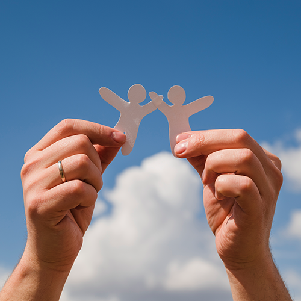
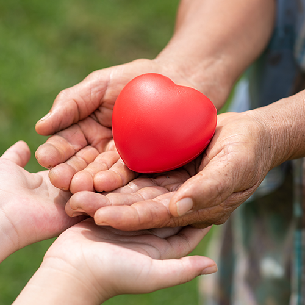
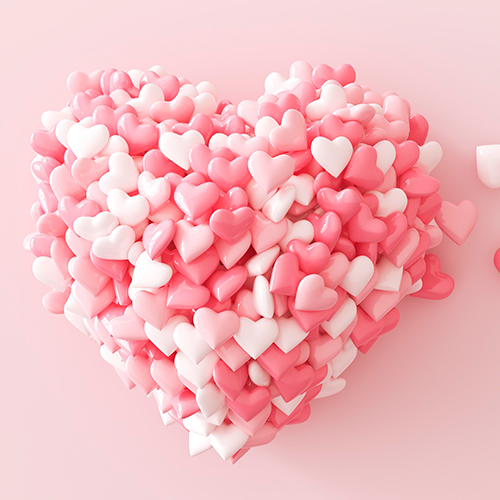

home> 사회공헌> 사회공헌철학
사회공헌 철학
기회의 균등, 사람에대한 투자, 나눔의 선순환
KG는 사회 전체의 의미있는 지속과 바른 균형을 지향합니다.
-

- 기회의 균등
- 각기 다른 나무들이 모여 하나의 숲을 이루듯이, KG는 사회 전체의 의미있는 지속과 바른 균형을 지향합니다
-

- 나눔의 선순환
- ‘존경받는 기업, 자랑스런 회사’라는 경영 이념을 기반으로 KG의 사회공헌 활동은 균형 있는 성장에 뿌리를 두고 지속 가능한 방법으로 사회문제를 해결하여 사회와 환경의 긍정적 변화를 만들어 나가는 것을 목표로 합니다.
-

- 사람에 대한 투자
- 문화와 교육의 기회를 다양하게 제공하여 어려운 환경에 있는 이들의 꿈을 응원하며 나눔의 선순환을 추구함으로써 우리 사회 전체가 건강하고 지속 가능하도록 만드는 데 필요한 역할을 앞으로도 적극적으로 해 나갈 것입니다.